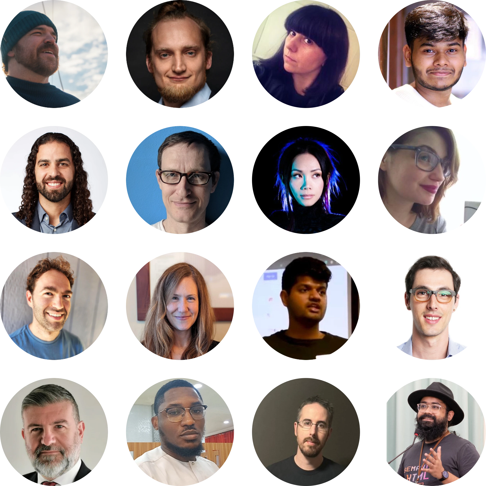

Our Team
We're a collective of cross-industry professionals helping to make the internet safer and more secure.
Board of Directors
Elijah Waxwing
Elijah is the co-founder of Riseup.net, the LEAP Encryption Access Project, and Thoughtworks. He's been working on the issue of digital justice, autonomous infrastructure, and surveillance of social movements since 2000. Elijah is a software developer, systems architect, information security specialist, and manager.
Mastodon
Glenn Sorrentino
Glenn is the founder and Executive Director of Science & Design and serves on the Board of Advisors to Distributed Denial of Secrets. In his most recent role as Principal Product Designer at Salesforce, he led the design for products including Search, Voice, Identity, and Authentication. His work has been awarded multiple US patents, and invitations to collaborate with institutions like Harvard's Belfer Center and the World Economic Forum.
LinkedIn
Micah Lee
Micah is a cofounder of Freedom of the Press Foundation, serves on the board of Distributed Denial of Secrets and OpenArchive, and is the Director of Information Security at The Intercept. He is a computer security engineer and an open-source software developer who writes about technical topics like digital and operational security, encryption tools, whistleblowing, and hacking using language that everyone can understand without dumbing it down. In addition, he develops security and privacy tools such as OnionShare, Dangerzone, and Semiphemeral.
Website
Serene
Serene is a software engineer, ex-hacker, and the creator of the Snowflake pluggable transport. Away from the computer, she is a concert pianist who concertizes around the world.
Website
Stefanie Daehler
Stefanie is a librarian and educator, holding a Masters of Library and Information Sciences from Pratt and a BA from Cornell. Her experience includes Penguin Publishing, The NYC Department of Education, and leadership at The Archer School for Girls.
LinkedIn
Contributors
Ashley Di Battista, Ph.D.
Ashley is a retired clinical neuropsychologist, long-time researcher with a PhD, and user experience expert. She loves making the complex comprehensible and has a thing for wordplay and puns, too.
You can watch/listen to her co-hosted podcast at YouTube or read her free articles on research and data how-to's at Medium.
LinkedInEse Udom
Ese is a software engineer based in Lagos, Nigeria. He's been coding for nine years with experience building with Java, PHP, Android, AOSP, Kotlin, AWS, and other web technologies.
LinkedInFlorian Idelberger, Ph.D.
Florian is a researcher and consultant with a focus on legal tech and security. In their Ph.D., they evaluated domain-specific and controlled natural languages to bridge the gap between humans and machines for understanding (computable) contracts. They also research topics like Law & AI and open-source licensing.
WebsiteGlenn Sorrentino
Glenn is the founder and Executive Director of Science & Design. Previously, as Principal Product Designer at Salesforce, he led design for products including Search, Voice, Identity, and Authentication. His work has resulted in multiple patents and collaborations with institutions like Harvard's Belfer Center.
LinkedIn
Maya Ninova, Ph.D.
Maya is a user researcher and social psychologist based in Barcelona, Spain, with over a decade of experience conducting behavioral research. She also consults organizations on research strategy and enjoys mentoring less experienced researchers.
LinkedInMiguel Jacq
Miguel is a DevSecOps engineer with 15 years of experience. He works with businesses, non-profits, and community organizations to run safer, resilient, and efficient digital services.
LinkedInNicola Fabiano
Nicola is an Italian lawyer and former San Marino Data Protection Authority President, focusing on privacy and cybersecurity. He created the DAPPREMO model and has authored numerous publications on data protection and privacy.
LinkedInRitik Shah
Ritik is a cybersecurity enthusiast with a Master’s in Cybersecurity from Northeastern University. He specializes in SOC analysis and network security, focusing on strengthening digital defenses.
LinkedInSam Schlinkert
Sam is an editor and programmer focused on privacy and usability. He has developed open-source tools for security and was previously a social media editor at CNN.
WebsiteSaptak Sengupta
Saptak is a web developer focused on security, privacy, and accessibility, ensuring great UI design respects fundamental human rights.
LinkedInSeth Brown
Seth is a software engineer passionate about scalable, accessible code. He leads projects for startups and Fortune 500 companies while advocating for code quality and TDD.
LinkedInSooraj Sathyanarayanan
Sooraj is a cybersecurity researcher specializing in blockchain, digital identity, and IT audit. He advocates for open-source and data privacy while fostering security awareness.
LinkedIn